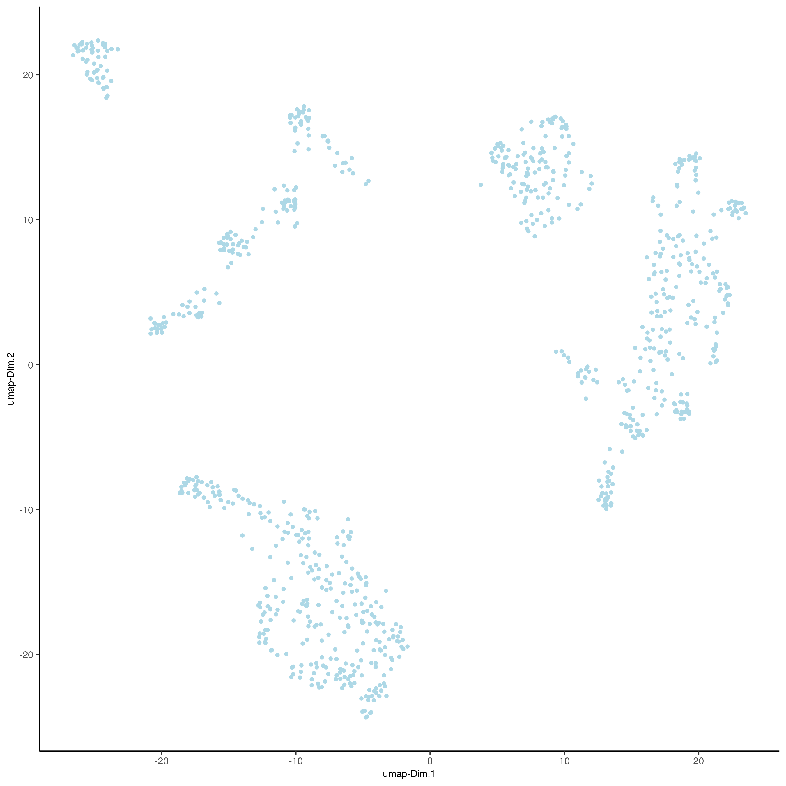

Multi-omics Mouse Embryo DBiT-Seq
Source:vignettes/mouse_embryo_dbitseq.Rmd
mouse_embryo_dbitseq.Rmd1. Dataset explanation
The dataset was created by Liu, et al 2020 and downloaded from https://www.ncbi.nlm.nih.gov/geo/query/acc.cgi?acc=GSE137986. For running this tutorial, we will use the dataset E10 Whole (50 μm) 2.
2. Start Giotto
# Ensure Giotto Suite is installed
if(!"Giotto" %in% installed.packages()) {
pak::pkg_install("drieslab/Giotto")
}
# Ensure the Python environment for Giotto has been installed
genv_exists = Giotto::checkGiottoEnvironment()
if(!genv_exists){
# The following command need only be run once to install the Giotto environment
Giotto::installGiottoEnvironment()
}3. Create Giotto object
Read expression matrix 22846 genes, 22 proteins, 901 cells
library(Giotto)
data_dir = "/path/to/your/data/"
## RNA
rna_expression = read.table(paste0(data_dir,"GSE137986_RAW/GSM4189613_0702cL.tsv.gz"),
sep = "\t",
header = TRUE)
rownames(rna_expression) = rna_expression$X
## Protein
protein_expression = read.table(paste0(data_dir,"GSE137986_RAW/GSM4202307_0702aL.tsv.gz"),
sep = "\t",
header = TRUE)
rownames(protein_expression) = protein_expression$XTranspose matrix
Get the spatial coordinates
spatial_coords = data.frame(cell_ID = colnames(rna_expression))
spatial_coords = cbind(spatial_coords,
tidyr::separate(spatial_coords, cell_ID, c("x","y"), sep = "x"))
spatial_coords$x = as.numeric(spatial_coords$x)
spatial_coords$y = as.numeric(spatial_coords$y)*-1Create the Giotto object
save_dir = 'results'
instrs = createGiottoInstructions(save_dir = save_dir,
save_plot = TRUE,
show_plot = TRUE)
giottoObject <- createGiottoObject(expression = list(raw = rna_expression,
raw = protein_expression),
expression_feat = c('rna', 'protein'),
spatial_locs = spatial_coords,
instructions = instrs)4. Processing
4.1 Filtering
## RNA
giottoObject <- filterGiotto(gobject = giottoObject,
expression_threshold = 1,
feat_det_in_min_cells = 1,
min_det_feats_per_cell = 1,
expression_values = 'raw',
verbose = TRUE)
## Protein
giottoObject <- filterGiotto(gobject = giottoObject,
spat_unit = 'cell',
feat_type = 'protein',
expression_threshold = 1,
feat_det_in_min_cells = 1,
min_det_feats_per_cell = 1,
expression_values = 'raw',
verbose = TRUE)4.2 Normalization
## RNA
giottoObject <- normalizeGiotto(gobject = giottoObject,
scalefactor = 6000,
verbose = TRUE)
## Protein
giottoObject <- normalizeGiotto(gobject = giottoObject,
spat_unit = 'cell',
feat_type = 'protein',
scalefactor = 6000,
verbose = TRUE)4.3 Statistics
## RNA
giottoObject <- addStatistics(gobject = giottoObject)
spatPlot2D(giottoObject,
spat_unit = 'cell',
feat_type = 'rna',
cell_color = "nr_feats",
color_as_factor = FALSE,
point_size = 3.5)
spatPlot2D(giottoObject,
cell_color = "total_expr",
color_as_factor = FALSE,
point_size = 3.5)
## Protein
giottoObject <- addStatistics(gobject = giottoObject,
spat_unit = 'cell',
feat_type = 'protein')
spatPlot2D(giottoObject,
spat_unit = 'cell',
feat_type = 'protein',
cell_color = "total_expr",
color_as_factor = FALSE,
point_size = 3.5)5. Dimension Reduction

5.2 PCA
# RNA
giottoObject <- runPCA(gobject = giottoObject)
screePlot(giottoObject,
ncp = 30)
plotPCA(gobject = giottoObject)
# Protein
giottoObject <- runPCA(gobject = giottoObject,
spat_unit = 'cell',
feat_type = 'protein')
screePlot(giottoObject,
spat_unit = 'cell',
feat_type = 'protein',
ncp = 30)
plotPCA(gobject = giottoObject,
spat_unit = 'cell',
feat_type = 'protein')6. Clustering
6.1 UMAP
# RNA
giottoObject <- runUMAP(giottoObject,
dimensions_to_use = 1:10)
plotUMAP(gobject = giottoObject)
# Protein
giottoObject <- runUMAP(giottoObject,
spat_unit = 'cell',
feat_type = 'protein',
dimensions_to_use = 1:10)
plotUMAP(gobject = giottoObject,
spat_unit = 'cell',
feat_type = 'protein')
6.2 Create shared nearest network (sNN) and perform leiden clustering
# RNA
giottoObject <- createNearestNetwork(gobject = giottoObject,
dimensions_to_use = 1:10,
k = 30)
giottoObject <- doLeidenCluster(gobject = giottoObject,
resolution = 1,
n_iterations = 1000)
# Protein
giottoObject <- createNearestNetwork(gobject = giottoObject,
spat_unit = 'cell',
feat_type = 'protein',
dimensions_to_use = 1:10,
k = 30)
giottoObject <- doLeidenCluster(gobject = giottoObject,
spat_unit = 'cell',
feat_type = 'protein',
resolution = 1,
n_iterations = 1000)6.3 Visualize UMAP cluster results
# RNA
plotUMAP(gobject = giottoObject,
cell_color = 'leiden_clus',
show_NN_network = FALSE,
point_size = 2,
title = "",
axis_text = 14,
axis_title = 18,
legend_text = 14)
# Protein
plotUMAP(gobject = giottoObject,
spat_unit = 'cell',
feat_type = 'protein',
cell_color = 'leiden_clus',
show_NN_network = FALSE,
point_size = 2,
title = "",
axis_text = 14,
axis_title = 18,
legend_text = 14)6.4 Visualize spatial results
# RNA
spatPlot2D(gobject = giottoObject,
show_image = FALSE,
cell_color = 'leiden_clus',
point_size = 3.5,
title = "",
axis_text = 14,
axis_title = 18,
legend_text = 14)
# Protein
spatPlot2D(gobject = giottoObject,
spat_unit = 'cell',
feat_type = 'protein',
show_image = FALSE,
cell_color = 'leiden_clus',
point_size = 3.5,
title = "",
axis_text = 14,
axis_title = 18,
legend_text = 14)7. Multi-omics integration
# RNA
giottoObject <- createNearestNetwork(gobject = giottoObject,
type = 'kNN',
dimensions_to_use = 1:10,
k = 20)
# Protein
giottoObject <- createNearestNetwork(gobject = giottoObject,
spat_unit = 'cell',
feat_type = 'protein',
type = 'kNN',
dimensions_to_use = 1:10,
k = 20)
giottoObject <- runWNN(giottoObject,
spat_unit = "cell",
modality_1 = "rna",
modality_2 = "protein",
pca_name_modality_1 = "pca",
pca_name_modality_2 = "protein.pca",
k = 20,
verbose = TRUE)
giottoObject <- runIntegratedUMAP(giottoObject,
modality1 = "rna",
modality2 = "protein",
spread = 7,
min_dist = 1,
force = FALSE)
giottoObject <- doLeidenCluster(gobject = giottoObject,
spat_unit = "cell",
feat_type = "rna",
nn_network_to_use = "kNN",
network_name = "integrated_kNN",
name = "integrated_leiden_clus",
resolution = 1)
plotUMAP(gobject = giottoObject,
spat_unit = "cell",
feat_type = "rna",
cell_color = 'integrated_leiden_clus',
dim_reduction_name = "integrated.umap",
point_size = 2,
title = "",
axis_text = 14,
axis_title = 18,
legend_text = 14)
spatPlot2D(giottoObject,
spat_unit = "cell",
feat_type = "rna",
cell_color = "integrated_leiden_clus",
point_size = 3.5,
show_image = FALSE,
title = "",
axis_text = 14,
axis_title = 18,
legend_text = 14)8. Deconvolution
We used the scRNAseq from Cao et al., 2019 as reference. J. Cao, M. Spielmann, X. Qiu, X. Huang, D.M. Ibrahim, A.J. Hill, F. Zhang, S. Mundlos, L. Christiansen, F.J. Steemers, et al. The single-cell transcriptional landscape of mammalian organogenesis. You can download the gene_count_cleaned_sampled_100k.RDS file from here.
8.1 Preparation of the scRNAseq
# read single cell procesed object
gene_count_cleaned_sampled_100k <- readRDS(paste0(data_dir,"gene_count_cleaned_sampled_100k.RDS"))
# download cell annotations
download.file(url = "https://shendure-web.gs.washington.edu/content/members/cao1025/public/mouse_embryo_atlas/cell_annotate.csv",
destfile = paste0(data_dir,"cell_annotate.csv"))
# or run in your terminal: wget https://shendure-web.gs.washington.edu/content/members/cao1025/public/mouse_embryo_atlas/cell_annotate.csv
cell_annotation = data.table::fread(paste0(data_dir,"cell_annotate.csv"))
cell_annotation = cell_annotation[,c("sample", "Total_mRNAs", "num_genes_expressed", "Main_cell_type")]
colnames(cell_annotation)[1] = "cell_ID"
cell_annotation = cell_annotation[cell_annotation$cell_ID %in% colnames(gene_count_cleaned_sampled_100k),]
sc_giotto <- createGiottoObject(expression = gene_count_cleaned_sampled_100k)
sc_giotto <- subsetGiotto(sc_giotto,
cell_ids = cell_annotation$cell_ID)
sc_giotto <- addCellMetadata(sc_giotto,
new_metadata = cell_annotation)
sc_giotto <- normalizeGiotto(sc_giotto,
log_norm = FALSE,
scale_feats = FALSE,
scale_cells = FALSE)Find markergenes
markers_scran <- findMarkers_one_vs_all(gobject = sc_giotto,
method = "scran",
expression_values = "normalized",
cluster_column = 'Main_cell_type',
min_feats = 3)
markergenes_scran <- unique(markers_scran[, head(.SD, 30), by = "cluster"][["feats"]])Create DWLS matrix
DWLS_matrix_direct <- makeSignMatrixDWLSfromMatrix(
matrix = getExpression(sc_giotto,
values = "normalized",
output = "matrix"),
cell_type = pDataDT(sc_giotto)$Main_cell_type,
sign_gene = markergenes_scran)Fix gene names
# download gene annotations
download.file(url = "https://shendure-web.gs.washington.edu/content/members/cao1025/public/mouse_embryo_atlas/gene_annotate.csv",
destfile = paste0(data_dir,"gene_annotate.csv"))
sc_gene_names = read.csv(paste0(data_dir,"gene_annotate.csv"))
ENSMUS_names = rownames(DWLS_matrix_direct)
sc_gene_names = sc_gene_names[sc_gene_names$gene_id %in% ENSMUS_names,]
rownames(DWLS_matrix_direct) = sc_gene_names$gene_short_name8.2 Run deconvolution
# run DWLS using integrated leiden clusters
giottoObject <- runDWLSDeconv(gobject = giottoObject,
sign_matrix = DWLS_matrix_direct,
cluster_column = "integrated_leiden_clus")Plot DWLS deconvolution result
# Plot DWLS deconvolution result with Pie plots dataset 1
spatDeconvPlot(giottoObject,
show_image = FALSE,
radius = 0.5,
return_plot = TRUE,
save_plot = TRUE,
save_param = list(save_name = "integrated_deconvolution"),
title = "",
axis_text = 14,
axis_title = 18,
legend_text = 0,
background_color = "black")9. Session Info
R version 4.3.2 (2023-10-31)
Platform: x86_64-apple-darwin20 (64-bit)
Running under: macOS Sonoma 14.3.1
Matrix products: default
BLAS: /System/Library/Frameworks/Accelerate.framework/Versions/A/Frameworks/vecLib.framework/Versions/A/libBLAS.dylib
LAPACK: /Library/Frameworks/R.framework/Versions/4.3-x86_64/Resources/lib/libRlapack.dylib; LAPACK version 3.11.0
locale:
[1] en_US.UTF-8/en_US.UTF-8/en_US.UTF-8/C/en_US.UTF-8/en_US.UTF-8
time zone: America/New_York
tzcode source: internal
attached base packages:
[1] stats graphics grDevices utils datasets methods base
other attached packages:
[1] Giotto_4.0.2 GiottoClass_0.1.3
loaded via a namespace (and not attached):
[1] IRanges_2.36.0 SpatialExperiment_1.12.0 urlchecker_1.0.1
[4] DT_0.31 Biostrings_2.70.2 vctrs_0.6.5
[7] digest_0.6.34 png_0.1-8 shape_1.4.6
[10] ggrepel_0.9.5 parallelly_1.36.0 magick_2.8.2
[13] MASS_7.3-60.0.1 pkgdown_2.0.7 tictoc_1.2
[16] reshape2_1.4.4 MAST_1.28.0 foreach_1.5.2
[19] httpuv_1.6.14 BiocGenerics_0.48.1 withr_3.0.0
[22] ggfun_0.1.4 xfun_0.42 ellipsis_0.3.2
[25] memoise_2.0.1 ggbeeswarm_0.7.2 clustree_0.5.1
[28] emmeans_1.10.0 profvis_0.3.8 gmp_0.7-4
[31] systemfonts_1.0.5 ragg_1.2.7 GlobalOptions_0.1.2
[34] gtools_3.9.5 sys_3.4.2 KEGGREST_1.42.0
[37] promises_1.2.1 scatterplot3d_0.3-44 httr_1.4.7
[40] restfulr_0.0.15 globals_0.16.2 pak_0.7.1
[43] rhdf5filters_1.14.1 ps_1.7.6 rhdf5_2.46.1
[46] rstudioapi_0.15.0 miniUI_0.1.1.1 generics_0.1.3
[49] processx_3.8.3 curl_5.2.0 S4Vectors_0.40.2
[52] zlibbioc_1.48.0 ScaledMatrix_1.10.0 ggraph_2.1.0
[55] polyclip_1.10-6 RcppZiggurat_0.1.6 quadprog_1.5-8
[58] GenomeInfoDbData_1.2.11 ExperimentHub_2.10.0 SparseArray_1.2.4
[61] FactoMineR_2.9 interactiveDisplayBase_1.40.0 xtable_1.8-4
[64] stringr_1.5.1 desc_1.4.3 trendsceek_1.0.0
[67] pracma_2.4.4 doParallel_1.0.17 evaluate_0.23
[70] S4Arrays_1.2.0 Rfast_2.1.0 gitcreds_0.1.2
[73] BiocFileCache_2.10.1 GenomicRanges_1.54.1 irlba_2.3.5.1
[76] colorspace_2.1-0 filelock_1.0.3 harmony_1.2.0
[79] reticulate_1.35.0 magrittr_2.0.3 later_1.3.2
[82] viridis_0.6.5 lattice_0.22-5 future.apply_1.11.1
[85] GiottoUtils_0.1.5 XML_3.99-0.16.1 scuttle_1.12.0
[88] cowplot_1.1.3 matrixStats_1.2.0 pillar_1.9.0
[91] iterators_1.0.14 STexampleData_1.10.0 compiler_4.3.2
[94] beachmat_2.18.0 stringi_1.8.3 SummarizedExperiment_1.32.0
[97] devtools_2.4.5 GenomicAlignments_1.38.2 jackstraw_1.3.9
[100] plyr_1.8.9 BiocIO_1.12.0 crayon_1.5.2
[103] abind_1.4-5 scater_1.30.1 ggdendro_0.1.23
[106] locfit_1.5-9.8 graphlayouts_1.1.0 bit_4.0.5
[109] terra_1.7-71 dplyr_1.1.4 whisker_0.4.1
[112] codetools_0.2-19 textshaping_0.3.7 GiottoVisuals_0.1.4
[115] BiocSingular_1.18.0 openssl_2.1.1 bslib_0.6.1
[118] GetoptLong_1.0.5 mime_0.12 multinet_4.1.2
[121] circlize_0.4.15 Rcpp_1.0.12 dbplyr_2.4.0
[124] sparseMatrixStats_1.14.0 leaps_3.1 knitr_1.45
[127] blob_1.2.4 utf8_1.2.4 clue_0.3-65
[130] BiocVersion_3.18.1 fs_1.6.3 listenv_0.9.1
[133] checkmate_2.3.1 DelayedMatrixStats_1.24.0 Rdpack_2.6
[136] pkgbuild_1.4.3 gh_1.4.0 estimability_1.4.1
[139] tibble_3.2.1 Matrix_1.6-5 callr_3.7.3
[142] statmod_1.5.0 tweenr_2.0.2 pkgconfig_2.0.3
[145] pheatmap_1.0.12 tools_4.3.2 cachem_1.0.8
[148] rbibutils_2.2.16 RSQLite_2.3.5 viridisLite_0.4.2
[151] DBI_1.2.1 fastmap_1.1.1 rmarkdown_2.25
[154] scales_1.3.0 grid_4.3.2 credentials_2.0.1
[157] ggspavis_1.8.0 usethis_2.2.2 Rsamtools_2.18.0
[160] AnnotationHub_3.10.0 sass_0.4.8 FNN_1.1.4
[163] BiocManager_1.30.22 farver_2.1.1 scatterpie_0.2.1
[166] tidygraph_1.3.1 yaml_2.3.8 MatrixGenerics_1.14.0
[169] rtracklayer_1.62.0 cli_3.6.2 purrr_1.0.2
[172] stats4_4.3.2 lifecycle_1.0.4 dbscan_1.1-12
[175] askpass_1.2.0 uwot_0.1.16 Biobase_2.62.0
[178] mvtnorm_1.2-4 bluster_1.12.0 sessioninfo_1.2.2
[181] backports_1.4.1 BiocParallel_1.36.0 gtable_0.3.4
[184] rjson_0.2.21 progressr_0.14.0 colorRamp2_0.1.0
[187] parallel_4.3.2 limma_3.58.1 jsonlite_1.8.8
[190] edgeR_4.0.15 bitops_1.0-7 ggplot2_3.4.4
[193] multcompView_0.1-9 bit64_4.0.5 Rtsne_0.17
[196] BiocNeighbors_1.20.2 RcppParallel_5.1.7 ggside_0.2.3
[199] jquerylib_0.1.4 metapod_1.10.1 ClusterR_1.3.2
[202] dqrng_0.3.2 downlit_0.4.3 shiny_1.8.0
[205] htmltools_0.5.7 rappdirs_0.3.3 glue_1.7.0
[208] httr2_1.0.0 GiottoData_0.2.7.0 XVector_0.42.0
[211] RCurl_1.98-1.14 rprojroot_2.0.4 scran_1.30.2
[214] gridExtra_2.3 flashClust_1.01-2 igraph_2.0.1.1
[217] R6_2.5.1 smfishHmrf_0.1 tidyr_1.3.1
[220] SingleCellExperiment_1.24.0 labeling_0.4.3 cluster_2.1.6
[223] pkgload_1.3.4 Rhdf5lib_1.24.2 ArchR_1.0.3
[226] GenomeInfoDb_1.38.6 DelayedArray_0.28.0 tidyselect_1.2.0
[229] vipor_0.4.7 ggforce_0.4.1 xml2_1.3.6
[232] AnnotationDbi_1.64.1 future_1.33.1 rsvd_1.0.5
[235] munsell_0.5.0 data.table_1.15.0 htmlwidgets_1.6.4
[238] ComplexHeatmap_2.18.0 RColorBrewer_1.1-3 rlang_1.1.3
[241] gert_2.0.1 remotes_2.4.2.1 fansi_1.0.6
[244] beeswarm_0.4.0